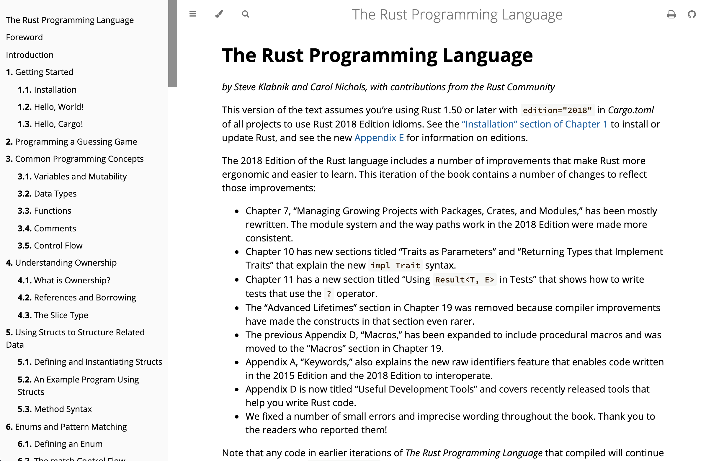
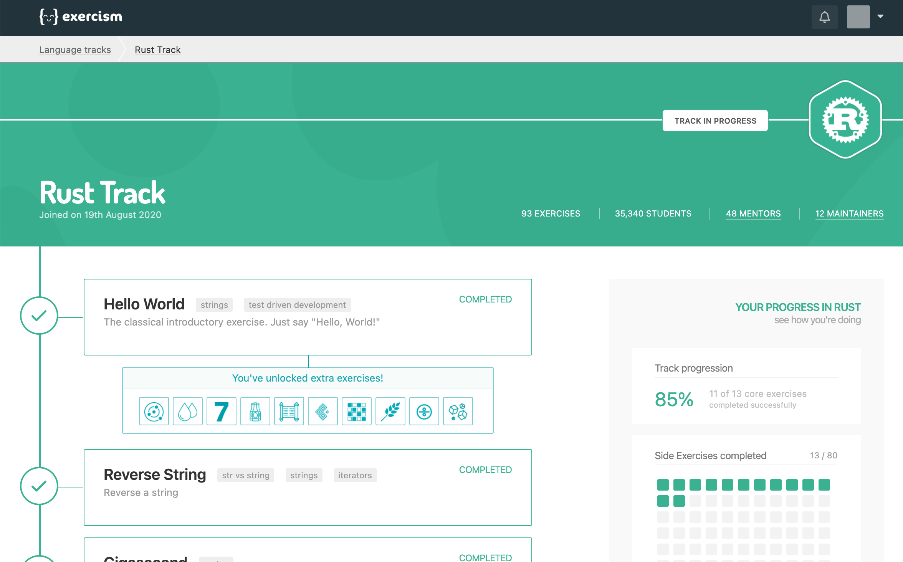

6 minutes
How I Started Learning Rust
I wanted to learn Rust for a while. The promises of memory-safety and performance have piqued my interest and I needed to see what all the hype was about. In turn, I spent some time learning Rust on and off over the last couple of months alongside university work.
In this post, I describe how I went about learning Rust and what resources I used. I also reflect on what methods worked well and what could have possibly been skipped. I hope this will be useful to anyone that’s also curious about Rust.
Overall, I started learning Rust by first working through the official Rust book, then working through the Rust Exercism exercises, and finally working on a project. In this post, I will describe each of the mentioned resources in further depth. I hope you enjoy the post!
The Rust Book
When researching a starting point for learning Rust, I found that the near-unanimous answer is to read the Rust Programming Language book. Although this book is available in physical and e-book forms, the most popular way to read it is in a website format.
The book contains up-to-date information with stable Rust and is actively updated. It covers the most important concepts of the language and even includes some projects within it, which massively helps with getting hands-on experience.
Overall the book was a great introduction to Rust and is very approachable. However, the book covers plenty of information and can take some time to work through. Personally, I found that I spent too much time reading about the theory and not enough time using the knowledge or assimilating it in any meaningful manner. Therefore, I feel that I shouldn’t have dwelled too hard on some of the less common concepts and started on projects sooner instead.
Exercism
After finishing the Rust book, I started the Exercism Rust track. I’ve been told about Exercism by a co-worker and have been eager to try it out since.
Overview
Effectively, Exercism provides programming puzzles in increasing difficulty, structured into “tracks”. Many languages are supported, one of which is Rust. The site provides a testing framework that you set up locally, which you then use to download exercises and upload solutions to the website.
On Exercism, a track contains core and extra exercises that you can work through in mentored or practice mode. In mentored mode (which is recommended), you complete the core exercises one by one. Then, a mentor gives feedback on your answers and allows you to then progress to the next exercise. When you complete a core exercise you also unlock some of the extra exercises, which mentors can also give feedback on (but I found they rarely do). In practice mode everything is unlocked outright, but mentor feedback is disabled. Also, when you finish a question in either mode you can publish your answer for others to check out and comment on.
Personal Experience
I found this to be a great transition from the Rust book as it requires you to know the basics of the language that you are coding in. To complete each exercise successfully independent research is required, which allows you to learn the language in an autonomous manner.
As to the website’s features, I found being able to see other people’s solutions very useful. After I came up with a solution, I checked other people’s to get inspiration from and used them to improve my own. This also greatly helped with learning how to write idiomatic Rust. Posting my own solutions was also massively beneficial. I had many people comment on my solutions, prompting interesting conversations and making me think about my code at a deeper level.
Since exercises are pulled down and solved locally, Exercism exercises lend themselves to creating a sort of “solution bank”. This allows for setting up Git in your Exercism directory, allowing for version control as you improve your answers. It also provides a great source of reference - for example, my solutions are available as a repo on my GitHub, which I found myself revisiting when working on other projects.
I read some criticisms of people saying that it takes a long time to received feedback in mentored mode and to switch to practice mode instead. Personally, I found this to not entirely be the case. Sometimes I could get feedback a couple of hours after submitting my solution, and in the worst case, I had to wait 2-3 days. The actual mentor feedback varied greatly in quality, however. Many mentors suggested improvements that I could find by briefly looking at other people’s solutions. If I already implemented improvements inspired by other solutions, many mentors didn’t have much to comment on. The best mentors benchmarked my solution against other solutions and suggested areas of improvement. I could then delve deep into the performance of my code and what Rust was doing under the hood
Overall, this was a good next step after reading the Rust book. It allowed me to do a lot of my own research on Rust with less hand-holding than the Rust book. While solving the exercises, I could also use many of the concepts described in Rust by Example.
Project
After finishing many Exercism exercises, I applied my knowledge to a project. I did this by checking the build-your-own-x GitHub repo which contains a wealth of tutorials and guides for different projects. There are a couple of interesting projects using Rust there, from which I chose Emil Hernvall’s guide on writing a DNS server in Rust.
Compared to Exercism and the Rust book, I learned a lot about how to structure and work on a Rust project from this guide. It also allowed me to get familiar with Rust tooling (e.g. testing and linting). Furthermore, there was plenty that could be improved upon the code in the guide as it was written a couple of years ago, and overall describes a fairly simple and bare-bones DNS server implementation. I found applying what I learned from Exercism exercises to improve upon the code in the guide particularly redeeming.
The final DNS server I wrote is available on my GitHub.
What Next?
I still have a lot of Rust to learn, and I’m hoping to expand my knowledge by working on other projects. So far, I thoroughly enjoyed learning the language, even despite its somewhat steep learning curve. Nevertheless, I’m excited to see it being adopted more in industry on major projects, especially with claims that it can be as productive as higher-level languages.